Ecotype Simulation
A User Guide
Introduction
The motivation and theory for Ecotype Simulation may be found in our recent paper in PNAS by
Koeppel et al.
Ecotype Simulation models the sequence diversity within a
bacterial clade as the evolutionary result of net ecotype
formation (here termed omega) and periodic selection (termed
sigma), yielding a certain number of ecotypes (termed npop).
Ecotype Simulation determines the rates omega and sigma,
and most importantly, the number of putative ecotypes (npop)
represented in an investigated set of sequences. Ecotype
Simulation also allows demarcation of the sequences belonging
to each ecotype. Here is an overview.
In the first step (Part 1, the Ecotype
Simulation), the observed sequence diversity for the clade
of interest is quantified as the "clade sequence diversity
curve." Then, using a brute-force method, Ecotype Simulation
looks over a very broad space of parameters (including
thousands of combinations omega, sigma, d, npop, over many
orders of magnitude) for the most promising region of the
space to yield the observed clade sequence diversity pattern
with maximum likelihood. Next, the downhill simplex method
(termed here "hillclimbing") is used to more precisely
identify the solution. In this first step, Ecotype Simulation
also determines the 95% confidence interval of the parameter
solutions.
In the second step (Part 2, the Demarcation), Ecotype
Simulation demarcates the individual sequences belonging to
each ecotype.
The program can accommodate at most 2000 sequences and 3000 nucleotides.
Requirements
Before you can run this program, you must have the latest
version of the Java Runtime Environment (JRE) installed. You can do so by navigating to the
Java download page
and downloading the latest update (you will need at least Java 6 to get the program to
run properly).
You MUST also download NJPlot™ from the NJPlot website.
Download the appropriate version for your operating system, and install it into a location that is accessible via
your system's PATH or in the EcoSim directory.
You MUST also download PHYLIP™ from the PHYLIP website. Download the appropriate version
for your operating system, and install it into a location that is accessible via your system's PATH or in the EcoSim directory.
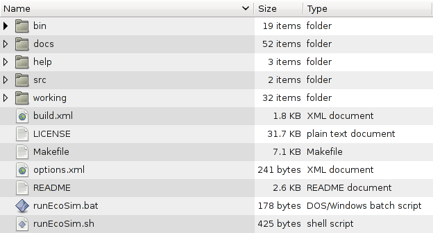
Figure 1. The extracted Ecotype Simulation folder.
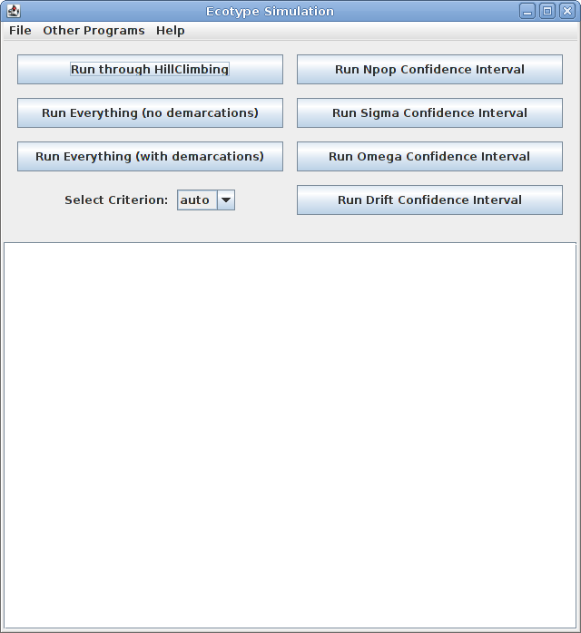
Figure 2. The Ecotype Simulation window.
How to use Ecotype Simulation
-
To run the Ecotype Simulation, first open up a fasta file
in the JAVA Window by going to File->Open Fasta File.
The fasta file must be formatted such that lines alternate
with >gene name and then the entire gene sequence on the
next line. If the sequence for each gene is not on a single
line, the program will not function correctly. If your
sequences are in blocks, they can be converted to a single
line format using BioEdit™ or other sequence-editing
software.
-
It is highly recommended not to run more than 200 sequences at a time
through this simulation. If you have more than 200 sequences, you may
consider randomly sampling from your sequences until you get down to under
200 sequences. Another possibility is to divide your clades into smaller
subclades that each contain 200 or fewer sequences, and then analyze each
subclade separately. 2000 sequences is the maximum, regardless of
the amount of time you're able to invest in analysis.
Depending on the speed of your computer, running 200
sequences may take a week or more.
At present, each sequence can be as long as 3000 nucleotides.
-
Note that the fasta input file must contain an outgroup, and
that the outgroup must be the first sequence in the
file. If you intend only to get the parameter
solutions without demarcating ecotypes (see below), then an
outgroup is not strictly necessary, but the program expects
an outgroup and so automatically ignores the top sequence in
the file. So you should add a placeholder sequence at the top
of your fasta file if you do not have an outgroup.
-
To automatically get parameter values for omega, sigma,
npop, and drift, click "Run through hillclimbing." Be advised
that this may take a long time, up to several days depending
on the number of sequences and the speed of your computer.
-
Many combinations of parameter values are evaluated for the
fraction of replicate runs that yield a close fit to the
observed clade sequence diversity curve (e.g., as seen in
Figure 1 of Koeppel et al.; this curve represents, for each
of a series of sequence identity criteria, the number of
sequence-identity bins required to encompass all the
sequences from the clade; also see description below "what
the Ecotype Simulation software actually does"). For a given
replicate run, a successfully close fit to the observed
diversity curve is defined as being within a chosen
"precision factor." For example, in our analyses of Bacillus simplex,
a replicate run was deemed successful if the
simulation's number of bins for each sequence identity
criterion was within a factor of 1.5 of the observed value.
-
The user may allow the program to choose the precision
factor by selecting the "no criterion" option. The program
will then choose the most precise factor that can be run
through hillclimbing in under 8 hours. Otherwise, the program
will attempt to use a user-selected factor.
-
If you prefer to choose a precision factor, click on the
drag-down menu under "select criterion" and choose the
criterion that you want (5x, 2x, 1.5x, 1.25x, 1.10x, 1.05x).
-
Once you have parameter values for a set of sequences, you
can save a progress file by going to File->Save Current
Project. The results will be saved in a *.cpm file.
-
Next, you can run confidence intervals to find the 95% confidence
interval for the parameter estimate.
-
You can choose to run confidence intervals on none, any, or all of the
following parameters: omega, sigma, npop, or drift.
-
Alternatively, if you click on "Run Everything (no demarcations)" the program
will calculate both parameter values and confidence intervals
for all parameters.
-
Finally, if you click on "Run Everything (with demarcations)" the
program will calculate parameter values and confidence intervals, and
automatically demarcate ecotypes without any further input.
-
A tree is required for automatic demarcations. You can choose to have
NJPlot generate a tree from the fasta file, or you can choose to provide
your own Newick tree. If you choose to provide your own Newick tree,
you must provide a properly formatted Newick tree. Distances and boostrap
data can be present in the tree.
-
See the Automatic Demarcations section for more information.
-
A narrative for the process of generating the parameter
solutions, which contains the input and output files for all
individual runs, is automatically saved by the program under
the name narrative.txt when the program is closed.
Copy and rename this file in order to have a record of the analysis.
How Ecotype Simulation works
We strongly recommend that you read this section, as it will
help you to use Ecotype Simulation with understanding and not
as a black-box method.
-
The quantification of the observed sequence diversity by the clade sequence diversity curve
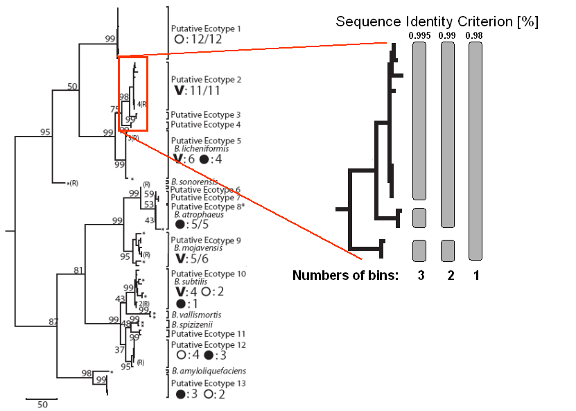
Figure 3. The quantification of sequence diversity by binning with a complete linkage clustering algorithm.
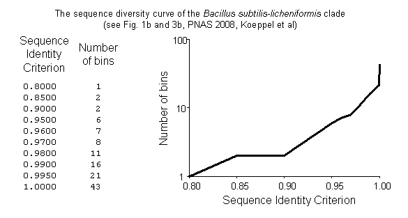
Figure 4. The number of bins at a given sequence identity criterion (left), and their graphical representation as clade sequence identity curve.
-
Next, the file "output.dat" which contains the binning
data (i.e., the observed clade sequence diversity curve) is
read in, the bins are written to the narrative file
(narrative.txt - which will contain all the inputs and
outputs to all programs as well as results), and then the
bins are stored so that they can be used as additional input
for the parameter estimation steps.
-
The next step is to run the brute-force method, where many
parameter combinations, spanning many orders of magnitude,
are evaluated for their ability to yield the observed clade
sequence diversity curve. The input file is written
automatically with the correct format (including numcrit,
which is the number of sequence identity criteria, the
binning data (representing the clade sequence diversity
curve), omega and sigma ranging from 0.001 to 100, npop
ranging from 1 to the number of sequences observed, drift at
1.0e25, xnumincs, which is the number of increments for
omega, sigma, npop, and drift, respectively, nu = the number
of sequences, and the number of replicate runs per parameter
combination (nreps), which is always set to 20 replicates. A
random number seed is generated, and the length of the
sequence is also written. The input data are shown below.
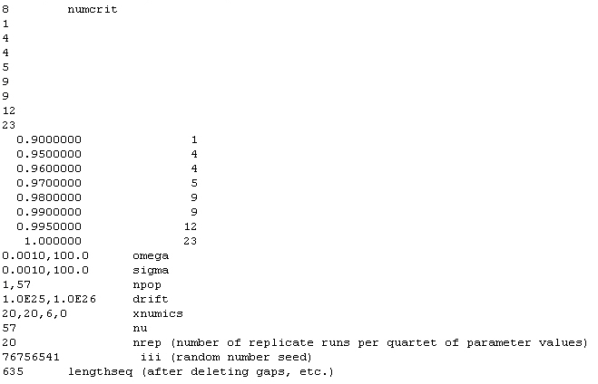
Figure 5. The (examplary) input information for the brute-force method.
-
Next the brute-force method is run with the above input,
and the program writes the output into acinas.out. Each
parameter combination that yields at least one successful fit
to the observed data, at the 5x precision factor, over the 20
replicates, is included in the output. For each such
parameter combination, acinas.out contains the values of the
four parameters (in order of omega, sigma, npop, and d),
followed by the fraction of successful fits to the observed
data at the following precision factors (and in this order):
5x, 2x, 1.5x, 1.25x, 1.1x, and 1.05x.
-
Identification of a promising region in the Ecotype Simulation space
-
The results of the brute-force method are then sorted to
yield the Ecotype Simulation to be used as the seed for the
downhill-simplex approach (termed here as "hillclimbing").
From the output of the brute-force method, we identify the
column of greatest precision that contains a solution with a
likelihood value of 0.1 or greater (i.e., where 2/20
replicates scored a successful match to the observed clade
sequence diversity curve). (We call this column X.) Then we
sort the Ecotype Simulation by the likelihood of successful
match in column X. The sorted list is stored in fredDebug.dat
in case there is a question as to the value chosen for
hillclimbing.
-
The hillclimbing step (downhill simplex method)
-
The chosen Ecotype Simulation is then tested more fully
(i.e., with 10000 replicates), so as to get a good estimate
of the approximate likelihood of this solution producing a
successful match to the observed data. The likelihood is
calculated for each of the six precision values (i.e., 5x,
2x, etc.).
-
The program then estimates how long it will take to run
the hillclimbing step. Starting with the precision level
associated with column X, the program calculates how many
replicates would be required to generate 50 successes, based
on the 10000 replicates of the above step. Then, based on the
amount of time it took to run the 10000 replicates of the
above step, it calculates the time needed to assay one
parameter combination for its likelihood value. Then, in
anticipation of the hillclimbing step requiring 50 iterations
of parameter combinations, it calculates the expected time to
complete hillclimbing. If the hillclimbing is predicted to
take longer than a preset number of hours (right now 8 hours)
the program goes back, resorts by a less precise criterion,
and then estimates the likelihood for that new parameter
combination with 10000 replicates as before. It then checks
the amount of run time again for hillclimbing. It continues
this way until an appropriate value for hillclimbing is
selected such that it will run in a reasonable amount of
time.
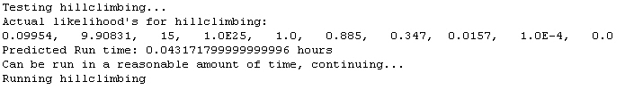
Figure 6. Preparing for hillclimbing.
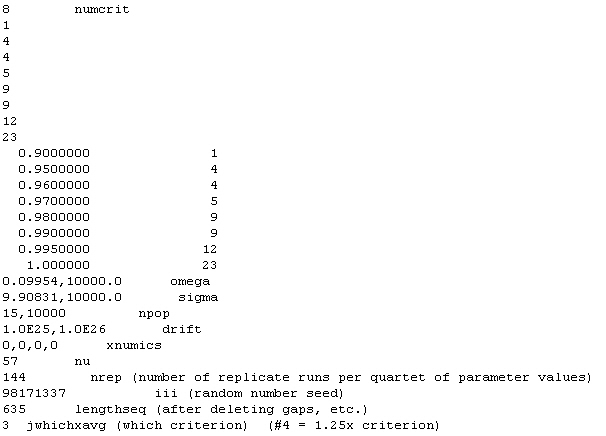
Figure 7. The final input informations for the hillclimbing.
-
Hillclimbing is then run on the given value with enough
replicates such that in the first iteration of hillclimbing,
approximately 50 successful matches to the observed data are
obtained. This value of nrep is obtained as 50 divided by the
likelihood for the Ecotype Simulation.
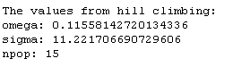
Figure 8. The result of the hillclimbing.
-
Estimation of the 95% confidence intervalls
-
Next are the confidence intervals. Omega and sigma
confidence intervals are run to a lower bound of 1e-7 and an
upper bound of 100, with 6 increments per order of magnitude.
If sigma runs up to 100 without getting out of confidence we
just say that sigma exceeds 100. Drift is run from infinity
down to 1e-7 with 3 increments per order of magnitude, and
then the final value is inverted to get the actual drift
value. The npop confidence interval is run down to 1 for the
lower bound and up to the number of sequences for the upper
bound. The last value still in confidence is reported in all
cases. Additionally, the program aims for 20 successes at the
threshold likelihood, ie for all two tailed tests (npop,
sigma, omega) it is the likelihood from our hillclimbing
parameters divided by 6.83, and for one tailed tests we
divide by 3.87.
-
All the appropriate inputs and outputs are stored in
narrative.txt as well as the final values
from the confidence intervals and hillclimbing.
During the run of Ecotype Simulation, all major
intermediate steps and results are logged in the Java window.
A typical log may look as follows:
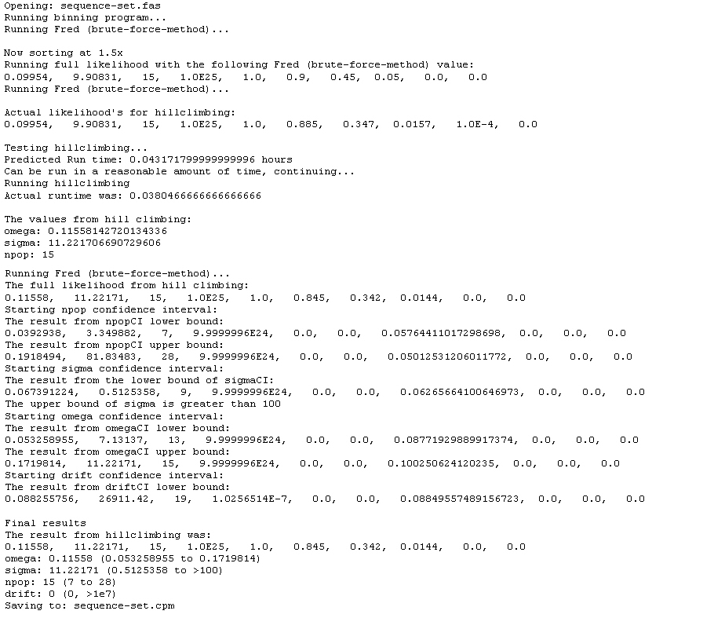
Figure 9. A typical log.
Manual Demarcations
-
You can also run demarcations (separate strains into
ecotypes) on the data by clicking on "other programs" and
clicking on demarcations.
-
Note: you can only do this after running through
hillclimbing or after loading a saved file of data that has
been run through hillclimbing
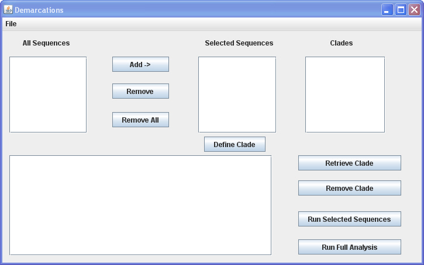
Figure 10. The Demarcations Window.
-
Once in demarcations, you must load a fasta file again: go
to file and click "open"
-
Note that this fasta file must contain an outgroup, and
that the outgroup must be the first sequence in the file.
-
Once you select an appropriate file, you must choose to
generate a Neighbor Joining or Parsimony Tree.
-
Alternatively, if you already have a tree formatted
correctly you can load that tree instead by going to
File->Load Newick Tree File. You will then be prompted to
load the proper fasta file as well
-
Once you have loaded a fasta file the tree will pop up in
NJPlot™ and the sequences will be listed in the demarcations
program under "All Sequences."
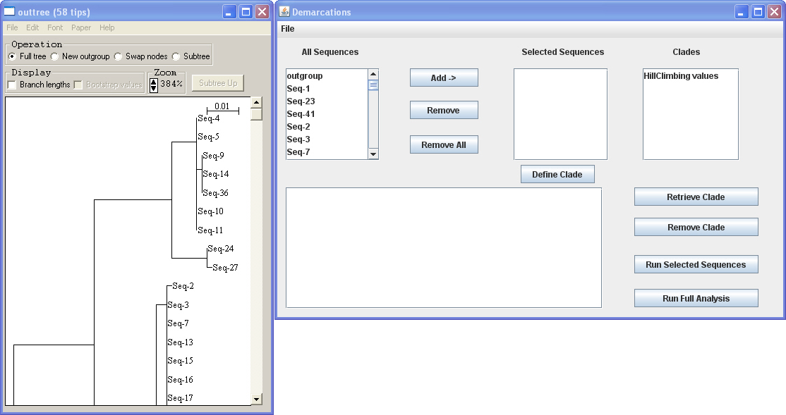
Figure 11. Tree loaded in "Demarcations".
-
You can select a group of sequences, click "Add" to add to
select them, and then click "run selected sequences" to see
if those sequences are consistent with being one ecotype. If
they are, the program will say that the confidence interval
included 1, meaning that the possibility that those strains
represent a single ecotype is within the 95% confidence
range.
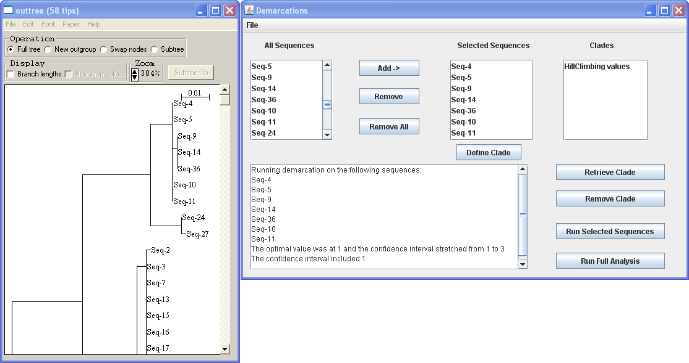
Figure 12. A clade consistent with being one ecotype.
In this example above, all sequences in the observed cluster
are consistent with being members of a single ecotype. Adding
two more sequences (Seq-24 and Seq-27) will lead to a set of
strains that are not anymore consistent with being a single
ecotype (see the figure below).
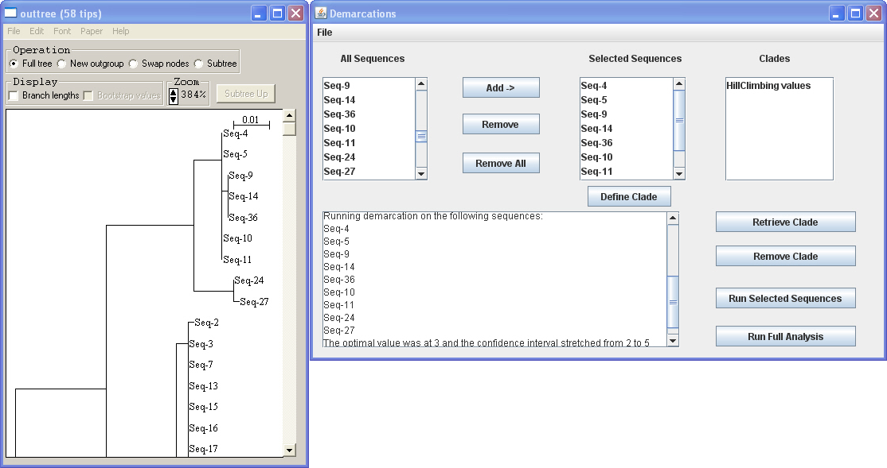
Figure 13. A clade not consistent with being one ecotype.
-
You can continue to add and run sequences and then when you
are satisfied that you have found the largest clade that is
consistent with being a single ecotype, you can click "Define
clade" to add them to the clade list. If you want to edit
that clade again you can click on it and click "retrieve
clade" to work on it. If desired, the sequences of a defined
clade can be saved in their own separate fasta file, by
retrieving the clade, and then selecting "Save Sequences as
Fasta File" from the dropdown menu.
-
A narrative for the demarcation process containing the
input and output files for all individual runs is
automatically saved by the program under the name
narrdemarc.txt when the program is
closed.
Copy and rename this file in order to have a record
of the demarcation analysis.
Automatic Demarcations
-
You can also have the Demarcations program automatically demarcate the
ecotypes with one click. You can do this by clicking on "other programs"
and then clicking on "Demarcations (Auto)."
-
Note: similar to the above method, you can only do this after running
through hillclimbing or after loading a saved file of data that has been
run through hillclimbing.
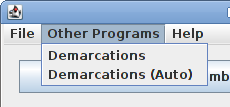
Figure 14. Choose Demarcations (Auto) from "Other Programs".
-
You will be prompted to load a fasta file again.
-
The fasta file must also contain an outgroup, which must be the first
sequence in the file.
-
A tree is required for automatic demarcations. You can choose to
have NJPlot generate a tree from the fasta file, or you can choose to
provide your own Newick tree. If you choose to provide your own
Newick tree, you must provide a properly formatted Newick tree. Distances
and boostrap data can be present in the tree.
-
Once you have chosen a method to generate your tree, the program will
begin automatically demarcating ecotypes.
-
After the program has run, the demarcated ecotypes will be shown, along
with the sequences found to be recombinants and the outgroup. You can
export the data to a CSV file (compatible with Microsoft Excel) by
clicking Export -> to CSV.
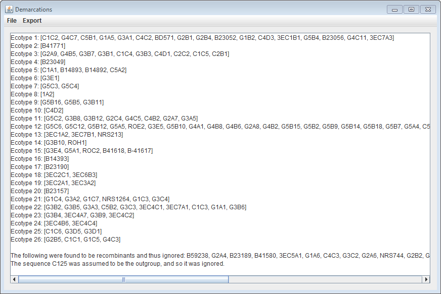
Figure 15. Automatic Demarcations Output.